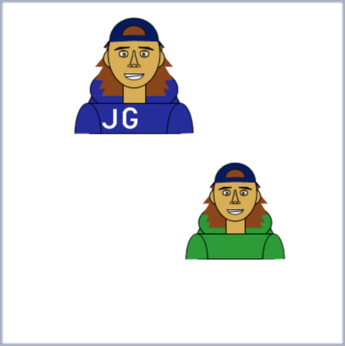
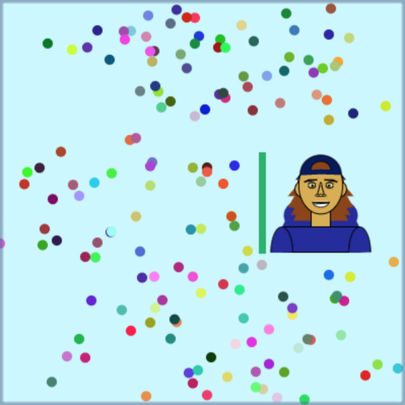
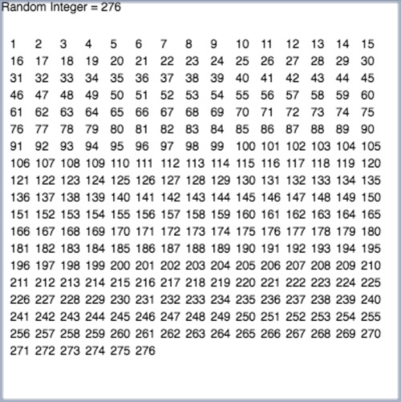
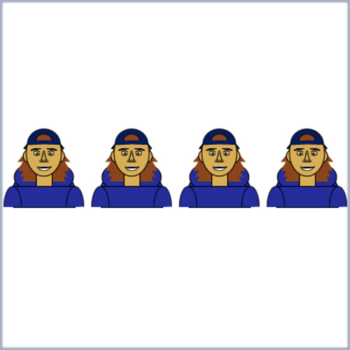
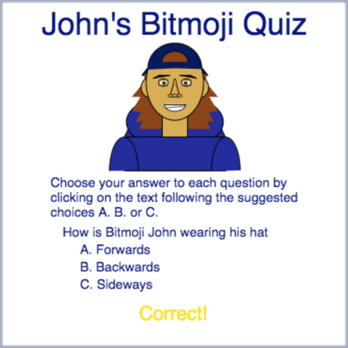
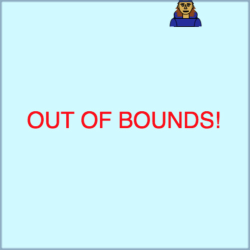
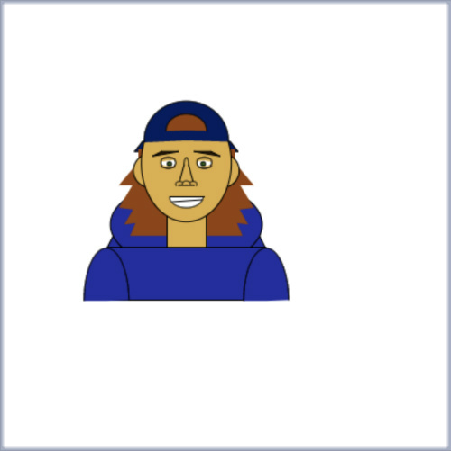
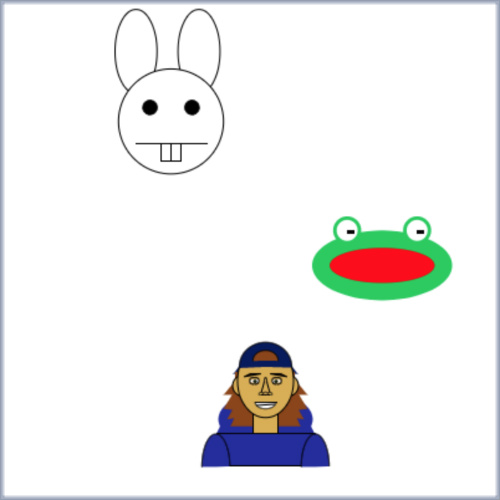
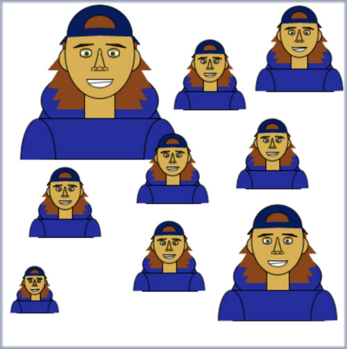

This page is where you can find links to any and all javascript programs I have written so far this semester. Click on the pictures to view each program live in a Khan environment, and feel free to interact with them. Have fun!
This program uses object oriented programming to reconfigure the program used to create Bitmoji John and also creates a clone that is ever so slightly different from the original. Can you spot the changes??
This program uses multiple arrays along with for loops and conditional statements in order to make the "rain" fall continuously across the screen, while preventing it from hitting Bitmoji John.
This program uses layered for loops to create a list of integers from 1 to a randomly determined integer, with only 15 integers per line.
This program, also using the power of for loops, generates a random number of Bitmoji Johns between 1 and 4. However, if a parameter is given outside the range [1,4] it returns an error message.
Using the power of conditional statements, this program allows the user to take a short quiz about Bitmoji John.
Drag your mouse around in the Khan Environment Window and watch as Bitmoji John follows you around!
Restart this program rapidly to watch Bitmoji John dance around the screen!
This program pits Bitmoji John against a frog and a bunny in a race to ... the other side of the Khan Environment Window ... WHO WILL WIN?!?
This program allows the user to change the size and position of Bitmoji John. Make him as small or as large as you like! Call the function many times to create an army of different sized Bitmoji Johns!
